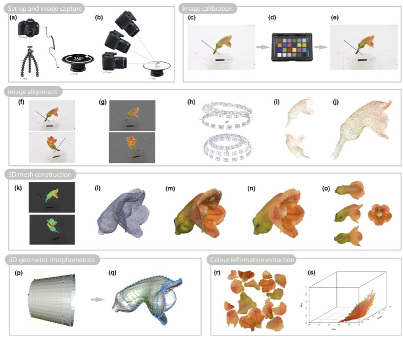

Previous Work
Traditional techniques for 3D flower modeling primarily include micro-computed tomography(micro CT) and photogrammetry: Micro CT scanning, used in studies such as Dellinger et al. (2019), provides high-resolution reconstructions of internal and external floral structures. However, it does not preserve color, involves destructive sampling, and requires specialized equipment, making it inaccessible for in field digitization. ABoth methods are limited by high cost, infrastructure needs, and lack of portability, making them impractical for large scale or on-site botanical documentation, particularly for fragile floral structures that degrade quickly.
Photogrammetry, as demonstrated by Leménager et al. (2023), uses structured image capture (DSLR camera, turntable, controlled lighting) to generate 3D models. While it captures both shape and color, it is time-consuming, expensive, and unsuitable for field deployment due to its reliance on controlled environments and extensive manual processing.
